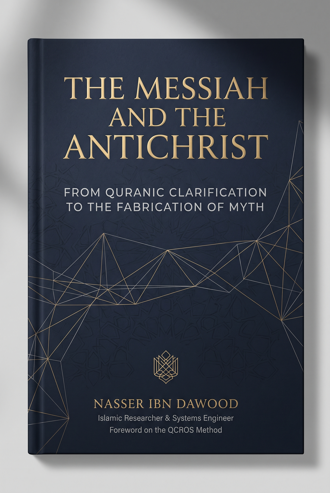

125. The Messiah and the Dajjal — From Qur’anic Discourse to the Making of Myth

A study of Qur’anic language, narrated traditions, comparative history, and the reception of the Dajjal concept. It distinguishes corpus observations, report criticism, historical hypotheses, and interpretive models, preserving open issues without forced identifications with people or technologies. Condensed conceptual English edition.
This is a condensed conceptual English edition, not a complete word-for-word translation. The Arabic text remains the primary source for detailed analysis and references.
قراءة PDF داخل الموقع / Read the PDF on this website
جارٍ تجهيز القارئ… / Preparing the reader…